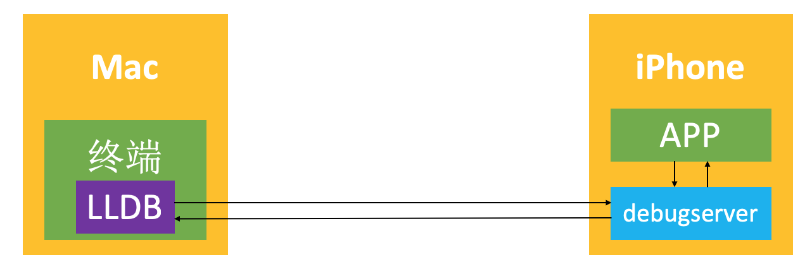

动态调试
一、Xcode调试APP的原理
Xcode中内置LLDB调试器，通过与iPhone连接，在iPhone安装debugserver的程序，debugserver与LLDB互相通信，发送调试指令和接收结果，debugserver与App之间互相通信，发送指令和接受结果。
debugserver 一开始存放在Mac的Xcode里面/Applications/Xcode.app/Contents/Developer/Platforms/iPhoneOS.platform/DeviceSupport/对应版本/DeveloperDiskImage.dmg/usr/bin/debugserver
在手机首次连接Debug调试时，Xcode会把debugserver安装到手机的/Developer/usr/bin/debugserver

二、动态调试
默认情况下，/Developer/usr/bin/debugserver缺少一定的权限，只能调试通过Xcode安装的APP，无法调试其他的APP（比如通过App Store下载的APP）
如果希望调试其他APP，需要对debugserver重新签名
2.1 debugserver重签名
1）将手机上的/Developer/usr/bin/debugserver复制到mac
2）通过file命令查看文件信息
$ file debugserver
debugserver: Mach-O universal binary with 2 architectures: [arm64:Mach-O 64-bit executable arm64] [arm64e]
debugserver (for architecture arm64): Mach-O 64-bit executable arm64
debugserver (for architecture arm64e): Mach-O 64-bit executable arm64e2.1）
如果Fat Mach-O的话，使用lipo命令剥离出和自己手机匹配的架构
lipo -thin arm64 debugserver -output debugserver
3）导出原来权限
$ ldid -e debugserver > debugserver.entitlements
4）修改权限文件，添加删除响应的权限，这里删除了com.apple.security.network.server，com.apple.security.network.client，seatbelt-profiles，添加了get-task-allow，task_for_pid-allow，platform-application，run-unsigned-code
<?xml version="1.0" encoding="UTF-8"?>
<!DOCTYPE plist PUBLIC "-//Apple//DTD PLIST 1.0//EN" "http://www.apple.com/DTDs/PropertyList-1.0.dtd">
<plist version="1.0">
<dict>
<key>com.apple.backboardd.debugapplications</key>
<true/>
<key>com.apple.backboardd.launchapplications</key>
<true/>
<key>com.apple.frontboard.debugapplications</key>
<true/>
<key>com.apple.frontboard.launchapplications</key>
<true/>
<key>com.apple.springboard.debugapplications</key>
<true/>
<key>com.apple.system-task-ports</key>
<true/>
<key>get-task-allow</key>
<true/>
<key>platform-application</key>
<true/>
<key>run-unsigned-code</key>
<true/>
<key>task_for_pid-allow</key>
<true/>
</dict>
</plist>
这里尝试了很多了，建议直接使用上面这个配置即可
5）重签名
$ ldid -Sdebugserver.entitlements debugserver
将已经签好权限的debugserver放到手机的/usr/bin目录
6）ssh登录手机，为debugserver添加权限
$:~ root# chmod +x /usr/bin/debugserver
2.2 开启调试
1）mac上开始usb端口映射
$ iproxy 10086 10086
2）debugserver附加到进程，需要提前打开app。或者可以通过debugserver直接启动app并附加到进程
Cchukou:~ root# debugserver 127.0.0.1:10086 -a WeChat
debugserver-@(#)PROGRAM:LLDB PROJECT:lldb-900.3.87
for arm64.
Attaching to process WeChat...
Listening to port 10086 for a connection from localhost...
3）lldb连接到debugserver
$ lldb
(lldb) process connect connect://127.0.0.1:10086
Process 14359 stopped
* thread #1, queue = 'com.apple.main-thread', stop reason = signal SIGSTOP
frame #0: 0x00000001a6dff0f4 libsystem_kernel.dylib`mach_msg_trap + 8
libsystem_kernel.dylib`mach_msg_trap:
-> 0x1a6dff0f4 <+8>: ret
# 链接成功
# 尝试打印image信息
(lldb) image list -o -f
[ 0] 0x0000000001164000 /var/containers/Bundle/Application/C4BD67F6-5D1E-4FB8-AAAC-CD9EE05248E9/ChangeColor.app/ChangeColor(0x0000000101164000)
[ 1] 0x0000000101490000 /Users/360jr/Library/Developer/Xcode/iOS DeviceSupport/12.4.8 (16G201)/Symbols/usr/lib/dyld
[ 2] 0x000000010117c000 /usr/lib/substitute-inserter.dylib(0x000000010117c000)
[ 3] 0x00000000263a8000 /Users/360jr/Library/Developer/Xcode/iOS DeviceSupport/12.4.8 (16G201)/Symbols/System/Library/Frameworks/Foundation.framework/Foundation
[ 4] 0x00000000263a8000 /Users/360jr/Library/Developer/Xcode/iOS DeviceSupport/12.4.8 (16G201)/Symbols/usr/lib/libobjc.A.dylib